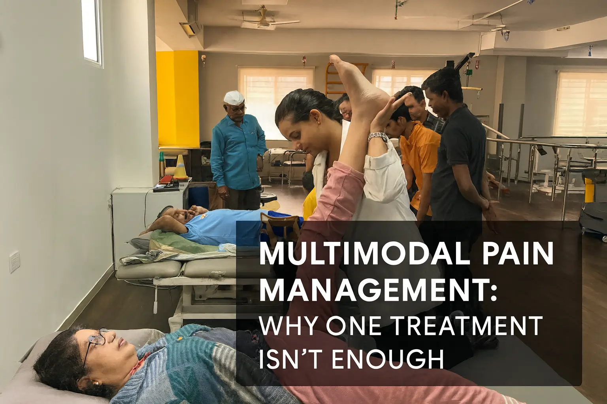

Multimodal Pain Management: Why One Treatment Isn't Enough


11
DEC
Apricot Care
Meet Priya. After a stroke two years ago, she spent three months in a hospital bed. The doctors managed her pain with medications. Lots of them. But the pills didn't help her walk again. They didn't bring back her confidence. They didn't help her return to her job or hold her grandchild without fear. One day, Priya's daughter found her crying in the bedroom, surrounded by empty medicine bottles. The pain was still there. But now depression and hopelessness had joined it.
That's when everything changed. Priya was admitted to a neuro rehabilitation centre in Pune that took a different approach. Not just more pills. But physical therapy that rebuilt her muscles. Speech therapy that restored her voice. Psychological support that rewrote her story about her future. Family training that made her home a place of healing instead of limitation.
Three months later, Priya was walking with a cane. Six months later, she was walking without one. A year later, she was back at work. The medications she once depended on had been reduced to a fraction of the original dose. But more importantly, she had reclaimed her life.
This is the truth about pain management that most websites about pain management in Pune won't tell you: Medication is only the beginning. Real healing happens beyond the pills.
Pain management definition: The comprehensive medical practice of using multiple integrated treatment approaches, including medications, physical restoration, psychological support, lifestyle modifications, and specialized therapies, all working together to reduce suffering and restore quality of life.
This article reveals why Apricot Care Assisted Living and Rehabilitation has become the model for pain management in Pune and beyond, and how rehabilitation services go far deeper than pain relief alone.
The Limitation of Medication-Only Approaches
Why Pills Alone Leave You Stuck
Here's what happens when pain management relies only on medication.
You take a pill. Pain decreases temporarily. You feel relief. But then what? You're still lying in bed. You're still afraid to move. You're still isolated. You're still depressed about your condition. The medication addressed your pain chemistry, but it didn't address the human being suffering with that pain.
Over weeks and months, something predictable happens. Your body adapts to the medication. The dose that once worked loses effectiveness. Your doctor increases it. You experience more side effects: drowsiness, constipation, confusion, nausea. The very medication meant to help you now makes you feel worse. Many patients find themselves more dependent on pills and less functional than before.
But there's a deeper problem that medication-only approaches completely miss:
Deconditioning and loss of function.
When you rely on medication to manage pain without engaging in rehabilitation, your muscles weaken. Your balance deteriorates. Your cardiovascular fitness declines. Your nervous system becomes more sensitized to pain, not less. Your brain gets accustomed to inactivity. What started as pain from an injury now becomes pain amplified by physical weakness and functional loss.
Medication freezes you in place. Rehabilitation moves you forward.
The Psychological Trap: Medication Without Support
Pain management in Pune too often focuses on reducing pain sensation while ignoring the emotional and psychological impact of chronic pain or recovery from injury.
When you're stuck with pain, your mind develops patterns. Catastrophic thinking: "I'll never recover." Fear avoidance: "Movement will make it worse." Hopelessness: "There's nothing that can help me." Depression and anxiety become entangled with physical pain.
A medication cannot address these patterns. A pill cannot rebuild your confidence or reshape your belief about your recovery. No painkiller can restore your sense of purpose or help you rebuild your identity after injury or illness.
Patients who receive only medication without psychological support and rehabilitation often remain psychologically trapped even when their pain improves. They're pain-free but depressed. Pain-free but disabled. Pain-free but isolated. The physical problem was treated, but the human being was not.
The Rehabilitation Revolution: What Happens When You Go Beyond Pills
Physical Restoration: Building Your Way Back to Life
True pain management in Pune means engaging in specialized physical therapy designed specifically for your condition and your recovery stage.
At a neuro rehabilitation centre like Apricot Care, physical therapy isn't generic exercise. It's precision restoration.
For stroke patients, it means retraining neural pathways through repetitive, purposeful movement. For post-surgical patients, it means carefully progressive strengthening that respects healing timelines. For patients with chronic pain, it means movement that desensitizes an overly reactive nervous system.
Here's what makes rehabilitation different from medication: Movement creates lasting change in your nervous system.
When you engage in consistent, structured physical therapy, your brain literally rewires itself. Neural connections strengthen. New pathways form. Your nervous system learns that movement is safe, not dangerous. Pain signals diminish not because of chemistry but because your body and brain have changed.
This is why patients who complete rehabilitation often experience pain relief that persists long after therapy ends. The change is structural and neurological, not chemical and temporary.
Physical restoration also addresses deconditioning directly. Weak muscles get strong. Poor balance improves. Cardiovascular fitness returns. Functional capacity increases. You don't just feel better; you actually become better.
Speech and Cognitive Rehabilitation: Restoring Communication and Thinking
For many patients at a neuro rehabilitation centre, pain management extends far beyond physical pain.
Stroke survivors often face aphasia (language difficulty) and cognitive challenges that create their own suffering. Someone who can't speak fluently experiences deep frustration and depression. Someone whose memory or thinking is impaired experiences fear and loss of identity.
Speech therapy at Apricot Care targets language recovery, swallowing function, and cognitive rehabilitation. Trained speech therapists use evidence-based techniques to retrain the brain's language centers, rebuild communication ability, and restore cognitive function.
Patients who regain the ability to speak clearly experience massive improvements in mood, confidence, and quality of life. The pain of isolation and inability to communicate often exceeds physical pain, and addressing it transforms recovery.
Cognitive rehabilitation addresses thinking problems, memory difficulties, and executive function challenges. These are not handled by medication. They require structured, therapeutic intervention from trained specialists.
Occupational Therapy: Reclaiming Independence and Purpose
Pain management isn't just about reducing pain sensation. It's about restoring the ability to do meaningful activities.
Occupational therapy at a neuro rehabilitation centre focuses on helping patients regain independence in activities of daily living: bathing, dressing, cooking, working, hobbies, and social engagement.
Many patients experience profound pain not just from their physical condition but from losing the ability to engage in activities that define them. A musician who can't play. A parent who can't care for their children. A professional who can't work. This existential pain often exceeds physical pain.
Occupational therapists work to restore these abilities through adaptive techniques, gradual skill rebuilding, and problem-solving strategies. When a patient regains the ability to do what matters to them, the psychological and emotional transformation is profound.
This is beyond medication. This is restoration of identity and purpose.
Nutritional Support: Fueling Healing
Pain management extends to how your body is nourished.
Nutrition affects inflammation levels, nerve function, brain chemistry, mood, and energy. Yet medication-only approaches to pain management completely ignore this.
At Apricot Care, nutritional counseling is integrated into the rehabilitation program. Nutritionists assess dietary patterns, identify deficiencies, and design meal plans that support healing, reduce inflammation, and optimize medication effectiveness.
Proper nutrition can reduce pain levels, improve sleep quality, enhance mood, accelerate tissue healing, and support physical therapy progress. This isn't alternative medicine; it's foundational medicine that supports all other interventions.
Psychological and Emotional Rehabilitation: The Hidden Foundation of Recovery
Pain Neuroscience Education: Changing How You Understand Pain
One of the most powerful interventions at a neuro rehabilitation centre never involves touching a patient or giving medication.
Pain neuroscience education teaches patients how pain actually works in the body and brain. Most patients carry incorrect beliefs about pain that amplify their suffering. They think pain means damage. They think pain means they shouldn't move. They think pain means they're broken beyond repair.
These beliefs are often wrong. And when you understand the actual neuroscience of pain, everything changes.
An experienced therapist or psychologist at Apricot Care teaches you:
- How pain is a signal, not a diagnosis
- Why pain can persist even after healing completes
- How fear and catastrophic thinking amplify pain perception
- Why movement and activity are essential to pain reduction
- How your nervous system can change in response to proper treatment
When patients truly understand their pain, catastrophizing decreases. Fear of movement decreases. Hope increases. The same pain level feels less severe because the patient understands it differently. This neurological shift is as powerful as any medication.
Cognitive Behavioral Therapy for Pain: Rewiring Thought Patterns
Pain doesn't exist only in your body. It exists in your thoughts, beliefs, and interpretations.
Cognitive behavioral therapy specifically adapted for pain works by identifying and changing thought patterns that amplify suffering. A therapist helps you recognize catastrophic thinking patterns and replace them with realistic, balanced perspectives.
For example:
- Catastrophic thought: "I'll never walk again"
- Realistic thought: "My recovery will take time, but progress is happening"
This isn't positive thinking or denial. It's evidence-based cognitive restructuring that changes how your brain processes pain signals.
Research shows that brief cognitive behavioral therapy for pain can reduce pain levels as much as medication adjustments, and the benefits persist after therapy ends.
Psychological Support and Counseling: Addressing Depression and Anxiety
Chronic pain and recovery from serious illness create emotional challenges that medications can't solve.
Depression often accompanies chronic pain. Anxiety frequently follows traumatic injuries or strokes. These psychological conditions intensify pain perception and slow recovery.
At a neuro rehabilitation centre like Apricot Care, psychologists work with patients to address depression, anxiety, grief, and identity loss. This isn't just talking about problems. It's structured psychological intervention using evidence-based approaches.
When depression is treated, pain perception decreases. When anxiety is managed, sleep improves and healing accelerates. When grief is processed, motivation for rehabilitation increases. Psychological treatment doesn't replace physical rehabilitation; it makes physical rehabilitation possible.
Family Therapy and Caregiver Support: Healing the System
Pain and recovery don't happen in isolation. They happen within families and relationships.
Family dynamics profoundly affect recovery. An overprotective family member might inadvertently reinforce dependency. A discouraged family might not encourage movement and activity. Relationship stress amplifies pain and slows healing.
At Apricot Care, family members are trained and supported. They learn how to encourage recovery without pushing too hard. They learn how to provide support without enabling dependency. They learn how to manage their own stress and grief so they can be present for their loved one.
This family-centered approach transforms outcomes. Patients with engaged, educated families recover faster and achieve better functional outcomes. The rehabilitation extends beyond the patient to the entire family system.
Specialized Interventions: When Beyond Medication Means Targeted Procedures
Nerve Blocks and Regional Pain Management Procedures
Beyond medication-only approaches, neuro rehabilitation centres like Apricot Care offer targeted interventional procedures that provide powerful pain relief without systemic medication.
Nerve blocks deliver medication directly to the nerves causing pain. Epidural injections target specific spinal nerve roots. These procedures provide localized pain relief that allows patients to participate in rehabilitation without being sedated by systemic medications.
The power of these procedures is that they enable rehabilitation. A patient with severe pain can't do physical therapy effectively. A nerve block provides sufficient relief to allow participation in therapy. The combination of temporary pain relief from the procedure and long-term improvement from rehabilitation creates better outcomes than either alone.
Spinal Cord Stimulation: Neuromodulation for Chronic Pain
For patients with severe, refractory chronic pain that hasn't responded to other interventions, spinal cord stimulation offers an option beyond increasing medication doses.
Spinal cord stimulation involves implanting a device that delivers gentle electrical pulses to the spinal cord, interrupting pain signals before they reach the brain. This approach can reduce opioid requirements dramatically, allowing patients to become more functional and engaged in rehabilitation.
This is precision pain management at its most advanced, and it's integrated within comprehensive rehabilitation programs at advanced centres.
The Apricot Care Model: Integration in Action
What Comprehensive Rehabilitation Actually Looks Like
At Apricot Care Assisted Living and Rehabilitation, the neuro rehabilitation centre model brings together multiple specialists in a coordinated approach.
When you arrive at Apricot Care after a stroke, spinal cord injury, brain injury, or for chronic pain management, you don't just get assigned a doctor. You get assigned a team.
Your team includes:
- A physician overseeing your overall care and managing any medications
- Physical therapists designing and directing your movement-based rehabilitation
- Occupational therapists helping you regain independence in daily activities
- Speech therapists addressing communication and cognitive needs
- Psychologists providing individual and family counseling
- Nurses providing skilled care and monitoring
- Nutritionists optimizing your diet for healing and inflammation reduction
- Social workers helping with discharge planning and community reintegration
This team meets regularly to review your progress, adjust your plan, and ensure all interventions work together rather than in isolation.
Personalized Rehabilitation Plans: Beyond One-Size-Fits-All
Every patient has a unique situation. Your stroke is different from someone else's stroke. Your chronic pain has different roots. Your recovery goals are specific to your life.
At Apricot Care, rehabilitation plans are personalized. They're based on thorough assessment of your specific deficits, your goals, your values, and your home situation. The plan evolves as you progress, becoming more challenging as you improve.
This is not a standard protocol applied to everyone. This is medicine tailored to you.
Home and Community Reintegration: Making Gains Stick
The measure of successful rehabilitation isn't whether you improve in a treatment facility. It's whether you maintain and build on that improvement in your real life.
Apricot Care's rehabilitation model includes intensive preparation for returning home. Your family is trained in how to support your continued progress. Your home is assessed and adapted as needed. Community resources are identified and arranged. The transition back to living independently in your community is as carefully planned as your in-facility rehabilitation.
This is why rehabilitation at Apricot Care often results in sustained gains. The work doesn't end when you leave the facility. It transitions to your real life with proper support and structure.
The Evidence: Why Beyond Medication Works Better
The Numbers Tell a Clear Story
Research comparing medication-only approaches to comprehensive rehabilitation consistently shows:
- Greater pain reduction with rehabilitation plus optimized medication than medication alone
- Better functional outcomes with comprehensive rehabilitation
- Higher quality of life scores with integrated approaches
- More sustainable results with rehabilitation that extends beyond the initial treatment period
- Significant reduction in medication needs when rehabilitation is effective
A patient who completes comprehensive rehabilitation often requires less medication for better pain control than someone on medication alone. This is not opinion; it's demonstrated outcome data across multiple conditions.
What Patients Report: Beyond Pain Scores
When you ask patients about their recovery experience, they rarely mention pain relief first. They mention:
- "I can walk again"
- "I can talk clearly"
- "I can work again"
- "I can play with my grandchildren"
- "I feel like myself again"
- "I'm not depressed anymore"
- "I have hope for my future"
These aren't measured on pain scales. These are measured in human terms: function, independence, purpose, hope, and reconnection with life.
This is what rehabilitation beyond medication achieves. It's not just pain relief. It's life restoration.
The Reality: Why Some Patients Still Choose Medication-Only Approaches
Cost and Time Considerations
Comprehensive rehabilitation requires significant time commitment and financial investment. Medication is quick and cheap. You can take a pill in seconds. Rehabilitation requires showing up, week after week, doing hard physical and emotional work.
Some patients choose the easier path of medication-only management. Some insurance systems don't adequately cover rehabilitation. Some patients live in areas without access to quality rehabilitation centres.
This is tragic because rehabilitation, despite its upfront cost and time investment, often saves money long-term. Fewer medications, fewer hospitalizations, better functional outcomes, faster return to work or independent living—all of these reduce long-term healthcare costs.
The Medication Lobby
Pharmaceutical companies market medications heavily to both doctors and patients. There's an entire industry incentivized to sell pills. The incentive structure for comprehensive rehabilitation is far weaker.
As a result, many patients are unaware that rehabilitation options exist. They assume medication is their only option. Doctors may not refer patients to rehabilitation because they're not as familiar with it or don't work closely with rehabilitation specialists.
This is changing, but slowly. Advanced neuro rehabilitation centres like Apricot Care are gradually changing the paradigm, showing that beyond medication is not just possible but preferable.
Getting Started: Your Path to Rehabilitation-Based Recovery
Assessment: Understanding Your Specific Situation
The first step isn't starting therapy. It's comprehensive assessment.
At a quality neuro rehabilitation centre like Apricot Care, you'll undergo detailed evaluation including:
- Medical history and current medications
- Physical assessment of strength, balance, coordination, and function
- Cognitive and speech assessment if applicable
- Psychological screening for depression and anxiety
- Nutritional assessment
- Social assessment of your living situation and support system
This assessment forms the foundation of your personalized rehabilitation plan. It identifies exactly which interventions will help you most.
Setting Goals: Beyond Pain Reduction
Your rehabilitation goals should extend far beyond pain reduction. Ask yourself:
- What specific activities do I want to be able to do?
- What does successful recovery look like for me?
- What functional abilities are most important?
- What role do I want to play in my family and community?
At Apricot Care, these conversations happen with your team. Your goals drive your rehabilitation plan. Your motivation to achieve your goals drives your participation in therapy.
Commitment to the Process
Rehabilitation requires active participation. You won't be passively receiving treatment. You'll be doing hard work. Challenging physical therapy. Difficult emotional processing. Repetitive practice and skill-building.
But this is the mechanism of change. The effort you invest is what creates the lasting improvement in your nervous system and function.
The Transformation: From Pain Patient to Recovered Person
The Stages of Rehabilitation-Based Recovery
Most comprehensive rehabilitation programs follow recognizable stages:
Stage 1: Acute Stabilization and Initial Intervention (Days 1-2 weeks)
During this stage, the focus is stabilizing your medical condition, beginning gentle therapy, and starting psychological support. The goal is establishing safety and beginning the process.
Stage 2: Active Rehabilitation (Weeks 2-12, varying by condition)
This is the intensive phase where you engage daily in physical therapy, cognitive therapy, speech therapy, and psychological support. Progress is often visible and encouraging.
Stage 3: Advanced Rehabilitation and Community Integration (Weeks 12+)
As you improve, therapy becomes more advanced and focused on real-world function. You practice community activities, work on return-to-work goals, and prepare for independent living.
Stage 4: Discharge and Maintenance (Ongoing)
You transition to community-based resources, home exercise programs, and outpatient therapy to maintain and build on your gains.
Real Recovery: What Returns When You Go Beyond Medication
When rehabilitation is comprehensive and well-executed, patients report:
- Return of physical abilities and independence
- Recovery of communication and cognitive function
- Resolution of depression and anxiety
- Restoration of sense of purpose and identity
- Renewed relationships and social engagement
- Ability to return to work or meaningful activities
- Genuine hope about the future
This is recovery in the deepest sense. Not just pain relief, but life restoration.
The Bottom Line: Beyond Medication Is the Standard of Care
Pain management that relies only on medication is outdated. It leaves patients partially treated and ultimately dependent.
Pain management that goes beyond medication, incorporating comprehensive rehabilitation, addresses the whole person: body, mind, emotions, relationships, and purpose.
The evidence is clear. The outcomes speak for themselves. Patients who engage in comprehensive rehabilitation achieve better pain relief, greater function, improved quality of life, and more sustainable recovery than those who rely on medication alone.
If you or a loved one is dealing with chronic pain, recovery from stroke, spinal injury, brain injury, or other neurological conditions, the question isn't whether medication might help. The question is: Are you ready to do the work of true rehabilitation?
At Apricot Care Assisted Living and Rehabilitation, the neuro rehabilitation centre in Pune is built on this principle. We don't just manage pain. We restore lives.
Your recovery journey deserves more than pills. It deserves a comprehensive team, personalized rehabilitation, psychological support, family involvement, and genuine hope for restoration.
What's holding you back from exploring what true rehabilitation could do for your recovery? Your first step is scheduling an assessment at a neuro rehabilitation centre that takes beyond medication approaches seriously. Apricot Care is here to help you take that step.